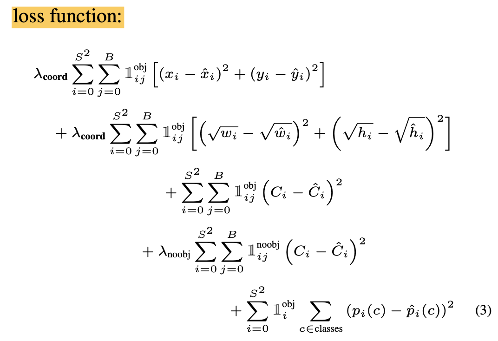

A full week to train
An amazing fact to me is the training time quoted in the paper… We train this network for approximately a week and achieve a single crop top-5 accuracy of 88% on the ImageNet 2012 validation set
It seems YOLO was deployed around 2015/6. This sticks out to me because a week is such a long time. If there was a week between each iteration, you would be looking at months for any complexity in an algorithm. They didn’t address this issue in the paper; perhaps they have ways to test smaller sets before committing to the week of training.
Pretraining to final model
They give a couple of changes they made to their between pretraining and final algorithm:
Move to 448 x 448 The pretrained model used 224 x 224 pixel inputs, but due to the fine-grained resolution needed for detection, the inputs were increased to 4482.
Addition of 4 CONV and 2 FC This was a little unclear in the paper, if these layers were added for pretraining or after the model was pretrained, but it was due to research quoted from Ren et al. [28]
Loss function
This is an important topic. YOLO used sum-squared error int he output of the model because it is easy to optimize. There are a couple of issues with the loss function.
It doesn’t perfectly optimize for the goal of maximizing average precision. The weight of localization and classification error are considered equally, which is not idea. In grid cells where there is no image, it pushes the confidence scores of those cells towards zero, overpowering the gradient from cells that do contain objects. This can lead to instability.
It sums errors for boxes equally, instead of ratiometrically. A large box is OK with a little error, but that same error on a small box could be very wrong. To partially address this issue, they predicted the square root of the bounding box width and height instead of it directly.
Here’s the loss function, I haven’t done serious study to understand each part:

Training steps
LR schedule starts at 10-3 for the first epochs to prevent divergence from unstable gradients. transition to 10-2 for 75 epochs, then 10-3 for 30 and finally 10-4 for 30 epochs.
Overfitting To avoid overfitting, they use dropout of .5 and random scaling and translations of up to 20% of original size. They also randomly adjust exposure and saturation.
[28] S. Ren, K. He, R. B. Girshick, X. Zhang, and J. Sun. Object detection networks on convolutional feature maps. CoRR, abs/1504.06066, 2015. 3, 7